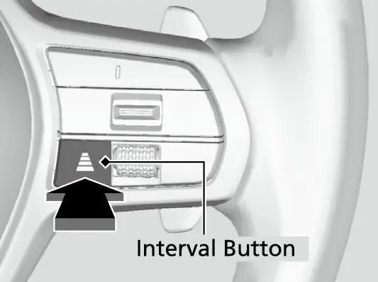
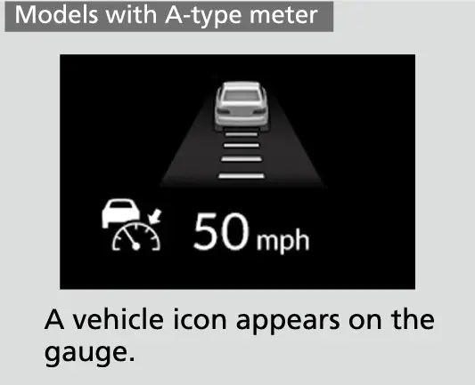
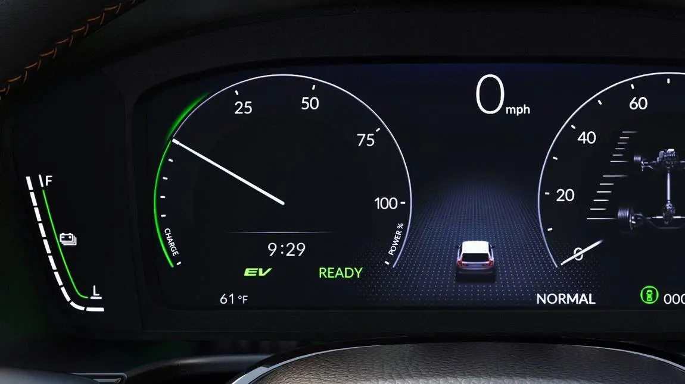
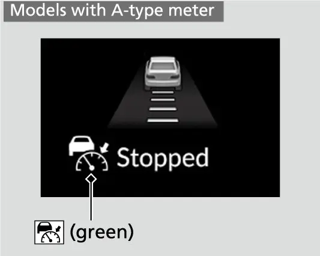
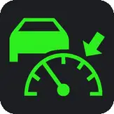
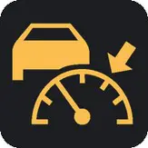
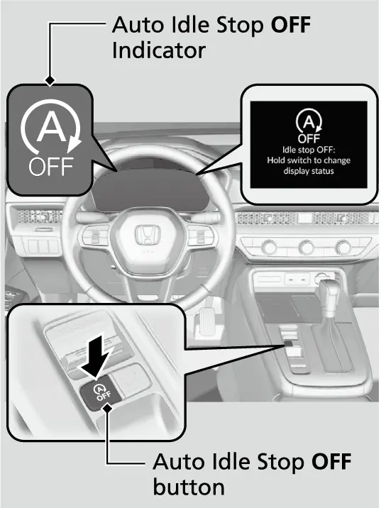
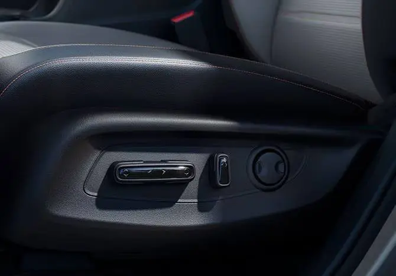
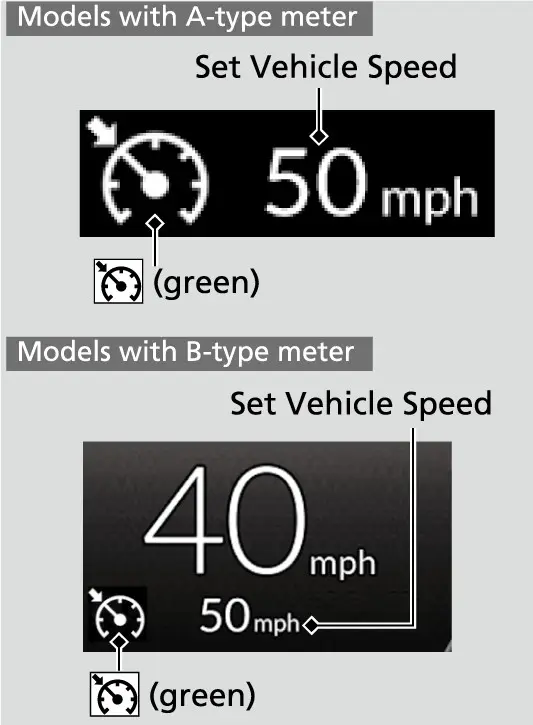
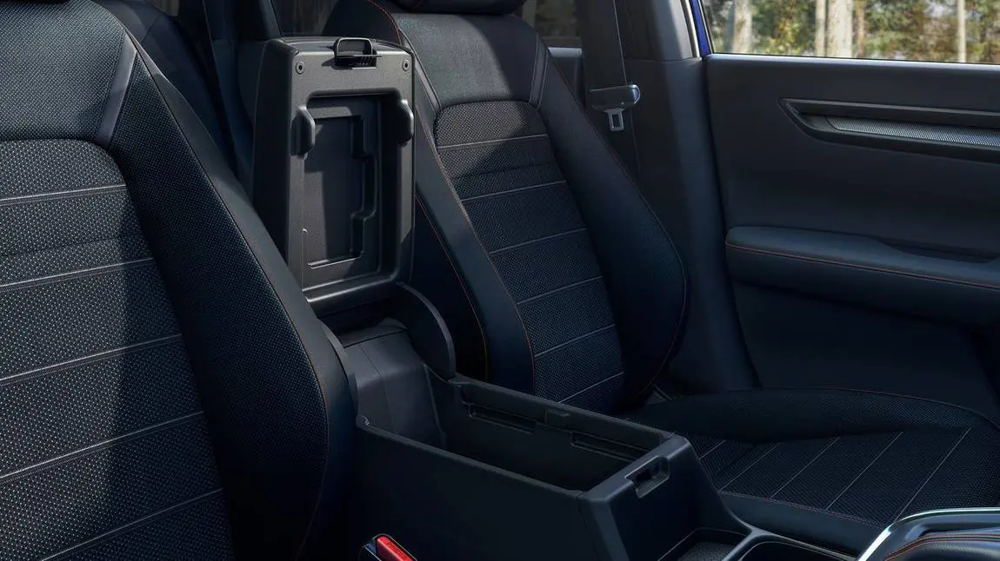

קאפיטל 25
הייוועי און שטאט פארן
זייטן 373–386 אינעם PDF
פלאץ אויפן הייוועי: אפשטאנד פון דעם קאר פאר אייך
דער אונער'ס מאנואל גיט נישט קיין איין פעסטן אפשטאנד פאר געווענליכע דרייווען. ער רעכנט אבער אויס די 4 אפשטאנד-סעטינגס פון Adaptive Cruise Control (ACC, דער קרוז קאנטראל וואס האלט אפשטאנד) מיט Low Speed Follow (נאכפארן ביי לאנגזאמע גיכקייט), וואס איר האט איינגעשטעלט אין קאפיטל 9. די נומערן זענען א גוטע מאָס אויך פאר אייער אייגענעם דרייווען. יעדער דריק אויפן Interval קנעפל (דער אפשטאנד קנעפל) אויפן סטירינג ווילס גייט איבער furthest, far, mid און nearest. דער מאנואל זאגט אז איר זאלט אויסקלייבן דעם סעטינג וואס פאסט פאר די דרייוו-באדינגונגען, און זיך האלטן צו די אפשטאנד-כללים פון די לאקאלע געזעצן. דער קאר גיט אייך ברירות, אבער דאס אורטייל בלייבט ביי אייך.

ACC אפשטאנד סעטינגס (פונעם אונער'ס מאנואל)
| סעטינג | ביי 50 mph (80 km/h) | ביי 65 mph (104 km/h) | צייט-אפשטאנד |
|---|---|---|---|
| Nearest (צום נאענטסטן) | 72 ft (22 m) | 95 ft (29 m) | 1 sec |
| Mid (מיטל) | 112 ft (34 m) | 142 ft (43 m) | 1.5 sec |
| Far (ווייט) | 154 ft (47 m) | 199 ft (61 m) | 2.1 sec |
| Furthest (צום ווייטסטן) | 208 ft (64 m) | 274 ft (83 m) | 2.9 sec |
די טאבעלע ווייזט אז די סעקונדעס בלייבן די זעלבע, בשעת די מרחקים וואקסן מיט דער גיכקייט. א זיכערער אפשטאנד איז באמת א צייט-אפשטאנד. ווען איר דרייווט אן ACC, קלייבט אויס א סיין אדער א סלופ, און הייבט אן ציילן ווען דער קאר פאר אייך פארט פארביי. אויב איר קומט אהין אין ווייניגער ווי 2 סעקונדעס, פארט איר נענטער ווי דער far סעטינג.
אויף אן איבערגעפולטן עקספרעסוועי פרובירט מען צו קלייבן nearest, אז קיינער זאל זיך נישט אריינשטופן. אט וואס דער מאנואל זאגט פאסירט ווען איינער שטופט זיך יא אריין. אויב א קאר וואס פארט פאמעלעכער ווי אייער איינגעשטעלטע גיכקייט קומט אריין פאר אייך, און דער ראדאר און קאמערע כאפן אים, הייבט אייער CR-V אן צו פארלאנגזאמען. אויב דער קאר פאר אייך פארלאנגזאמט פלוצלונג, אדער אן אנדער קאר שטופט זיך אריין, הערט מען א ביפ און א מעלדונג באווייזט זיך אויפן driver information interface (דער אינפארמאציע-דיספליי פארן דרייווער) אז איר זאלט ברעמזן. דריקט דעם ברעמז פעדאל און שטעלט אליין צוריק א ריכטיגן אפשטאנד.

דער מאנואל באמערקט אויך צוויי פעלער ווען ACC קען אפשר צוגעבן גאז כאטש דער אפשטאנד איז קורץ: ווען דער קאר פאר אייך פארט בערך אזוי גיך ווי איר אדער גיכער, און ווען א קאר וואס האט זיך אריינגעשטופט ציט זיך אוועק פון אייך. ווען דער קאר פאר אייך גייט ארויס פון אייער ליין, צ. ב. ביי אן אינטערטשעינדזש אדער רעסט עריע, קען ACC נאך א קורצע צייט ווייטער האלטן דעם אפשטאנד.
אריינפארן אויפן עקספרעסוועי
א גוטער מערדזש הייבט זיך אן אויף דער ראמפ. Honda'ס ספעציפיקאציעס רעכענען 190 כוח-פערד ביי 6,000 rpm און 179 lb-ft טארק פון 1,700 ביז 5,000 rpm. דער ברייטער טארק באנד מיינט אז א פעסטער דריק אויפן גאז ברענגט אייך גיך צו דער גיכקייט פונעם טראפיק. קריכט נישט צום סוף פון דער ראמפ. גלייכט פריער אויס די גיכקייט פון דער ליין, און דערנאך קלייבט אויס אייער לאך.

אויב Lane Keeping Assist (LKAS, די ליין-האלטן הילף) איז אן, גיט שטענדיג א סיגנאל פארן טוישן ליין. דער מאנואל זאגט אז LKAS ארבעט נאר ווען די בלינקערס זענען אויסגעלאשן, איז דער סיגנאל זאגט דעם סיסטעם אז איר טוישט ליין מיט כוונה. קאפיטל 10 דערקלערט LKAS אינגאנצן.
Blind Spot Information (BSI)
אייער EX האט דעם Blind Spot Information סיסטעם (ווארענונג פאר קארס אין בלינדן ווינקל); די LX האט עס נישט. Honda'ס פיטשער גייד זאגט אז עס איז דא א ראדאר סענסאר אין יעדן הינטערשטן ווינקל פונעם קאר. דער סיסטעם ארבעט ווען איר פארט פאראויס בערך 20 mph (32 km/h) אדער גיכער.
BSI ווארענונג-געגנטן
| געגנט | וואס עס דעקט |
|---|---|
| לעבן דעם קאר | בערך 1.6 ביז 10 ft (0.5 ביז 3 m) פון דער זייט |
| הינטער דעם קאר | בערך 10 ft (3 m) פונעם הינטערשטן באמפער |
| פארלענגערטע געגנט | בערך 10 ביז 82 ft (3 ביז 25 m) הינטער דעם באמפער |
דער סיסטעם הייבט אן נאר מיט דער נאענטער געגנט (alert zone 1). נאכדעם וואס איר פארט אויף גלייכע וועגן מיט טראפיק און זאכן לעבן דעם וועג, פאסט ער זיך צו און לייגט צו די פארלענגערטע געגנט (alert zones 1 און 2). אין דער פארלענגערטער געגנט, וואס גיכער א קאר קומט צו, אלץ ווייטער הינטן ווערט ער געכאפט. אויב דער הינטערשטער באמפער אדער א טייל פונעם סיסטעם ווערט פאררעכנט, גייט BSI צוריק צו zone 1 ביז ער פאסט זיך ווידער צו.
דאס געלע ווארענונג-ליכטל זיצט אין יעדן אויסערליכן שפיגל. עס צינדט זיך אן ווען א קאר קומט פון הינטן אייך צו איבעריאגן מיט א גיכקייט-אונטערשייד פון נישט מער ווי בערך 31 mph (50 km/h), און ווען איר יאגט איבער א קאר מיט נישט מער ווי בערך 12 mph (20 km/h) גיכער. אויב איר גיט א סיגנאל צו א זייט וואו דאס ליכטל ברענט, בלינקט דאס ליכטל און דער ביפער קלינגט 3 מאל.
סדר ביים טוישן ליין
- קוקט אין אינעווייניגסטן און אין די אויסערליכע שפיגלען.
- קוקט אויפן BSI ליכטל אין שפיגל אויף יענער זייט.
- צינדט אן דעם בלינקער פרי; די בלינקנדיגע ווארענונג ארבעט נאר ווען דער סיגנאל איז אן.
- דרייט זיך אום און קוקט איבער דער אקסל.
- גייט איבער גלאט.
די גרענעצן פון BSI
דער מאנואל זאגט אז דאס ליכטל קען זיך אפשר נישט אנצינדן ווען דער גיכקייט-אונטערשייד איז גרויס, איז א גיכער קאר קען אייך דערגרייכן פאר סיי וועלכע ווארענונג. עס קען אויך בלייבן פינצטער פאר א קאר וואס שטייט געפארקט אין א זייטיגער ליין, פאר זאכן וואס דער ראדאר זעט נישט, און פאר מאטארסייקלס און אנדערע קליינע פארמיטלען.
דער סיסטעם קען אויך נישט ריכטיג ארבעטן ביים אויסדרייען ביי אן אינטערסעקשן, אויף קרומע וועגן, ווען א קאר קומט איבער פון צוויי ליינס ווייט, נעבן גארד רעילס, סלופעס אדער ביימער, ביי ראדאר-שטערונג פון אנדערע קארס אדער נאענטע געביידעס, אין שטארקן רעגן, שניי אדער נעפל, אויף הויקערדיגע וועגן וואס שאקלען דעם קאר, מיט א בייסיקל-ראק הינטן, אדער ווען דער הינטערשטער באמפער איז שמוציג, פארפרוירן, צעבראכן אדער פארקרימט. האלט די ווינקלען פונעם הינטערשטן באמפער ריין און אן לעיבלס אדער סטיקערס. לעשט אויס BSI ווען איר שלעפט א טריילער, ווייל דער טריילער קען דעם קאר אנבייגן און אנצינדן די ליכטלעך.
שטיין-און-פארן טראפיק
Honda'ס פיטשער גייד זאגט אז Low Speed Follow מאכט גרינגער דעם שטיין-און-פארן טראפיק אויפן הייוועי. אויב דער געכאפטער קאר פאר אייך שטעלט זיך אפ, שטעלט זיך אויך אפ אייער CR-V, און Stopped (אפגעשטעלט) באווייזט זיך אויפן מיטער. ווען דער טראפיק רירט זיך ווידער, שטופט דעם סוויטש צו RES/+ אדער דריקט דעם גאז, און דער קאר פארט ווייטער ביז אייער איינגעשטעלטע גיכקייט. אויב קיין קאר איז נישט פאר אייך ווען איר פארט אוועק, דריקט דעם גאז צו פארזעצן.



דער מאנואל לייגט צו א ווארענונג: אויף וועגן מיט אפטע ליין-טוישן אדער שטענדיגן שטיין-און-פארן טראפיק, קען ACC נישט שטענדיג האלטן א ריכטיגן אפשטאנד. ACC האט אויך באגרעניצטע ברעמז-כוח און קען אפשר נישט אפשטעלן אין צייט אויב דער קאר פאר אייך שטעלט זיך גיך אפ. זייט גרייט צו ברעמזן.
דער סיסטעם שוצט אייך אויף עטליכע אופנים. אויב דער קאר שטייט מער ווי 10 מינוט, אויב איר שנאלט אויף אייער סיט בעלט בשעת'ן שטיין, אדער אויב דער מאטאר ווערט אויסגעלאשן (נישט דורך Auto Idle Stop), ווערט ACC קענסלט און דער פארקינג ברעמז לייגט זיך אויטאמאטיש אן. בשעת אן ACC אפשטעל קען זיך דער מאטאר אויך אויסלעשן דורך Auto Idle Stop (אויטאמאטיש אויסלעשן דעם מאטאר ביים שטיין). ער צינדט זיך אליין אן ווען דער קאר פאר אייך פארט אוועק, און אויך אויב איר שיפט ארויס פון D.
Traffic Jam Assist
Traffci Jam Assist (הילף אין טראפיק) איז דער שותף פון LKAS ביי לאנגזאמע גיכקייט. ווען LKAS איז אן און די קאמערע ביי דער שויב זעט ליין-ליניעס אויף ביידע זייטן, גיט ער צו סטירינג כוח אייך צו האלטן אין מיטן אין געדיכטן טראפיק.
באדינגונגען פאר Traffic Jam Assist
| אלע די מוזן זיין | ניצט עס נישט |
|---|---|
| LKAS איז אן | אין שארפע קורוון |
| ליין-ליניעס אויף ביידע זייטן; קאר נאענט צום מיטן | ביי טאל בודקעס, אינטערטשעינדזשעס, סערוויס אדער פארקינג געגנטן |
| בערך 0 ביז 45 mph (0 ביז 72 km/h) | אין רעגן, נעפל אדער שניי |
| גלייכער אדער לייכט געבויגענער וועג | אויף אייזיגע, שנייאיגע אדער גליטשיגע וועגן |
| אלע די מוזן זיין | ניצט עס נישט |
|---|---|
| דרייווער האלט דעם ראד, אין D, S אדער L |


אויב איר נעמט אראפ די הענט פונעם ראד, באווייזט זיך א ווארענונג. אויב איר איגנארירט עס כסדר, קלינגט א באזער און Traffci Jam Assist ווערט קענסלט. דער סיסטעם ווארט ווען ער פארלירט די ליין-ליניעס, ווען איר דרייט שארף אדער דרייט בכלל נישט, אין א שארפן קורוו, אדער ווען איר ברעמזט פלוצלונג, און ער קומט צוריק ווען די באדינגונגען זענען פארביי. ער ווערט קענסלט אויב די קאמערע ווערט צו הייס אדער די שויב ארום איר איז שמוציג. דריקט דעם LKAS קנעפל עס אויסצולעשן.
דרייווען אין שטאט
Automatic Brake Hold ביי רויטע ליכט
אין שטאט מאכט Automatic Brake Hold (די אויטאמאטישע ברעמז-האלט פונקציע) די רויטע ליכט רואיג. קאפיטל 17 דערקלערט ווי מען צינדט אן דעם סיסטעם מיט זיין קנעפל.
ניצן Automatic Brake Hold
- שטעלט זיך אינגאנצן אפ מיטן ברעמז פעדאל, מיטן שיפט נישט אין P און נישט אין R.
- האלט דעם פוס אויפן ברעמז ביז דאס automatic brake hold ליכטל צינדט זיך אן.
- לאזט אפ דעם ברעמז פעדאל; דער ברעמז ווערט געהאלטן ביז 10 מינוט.
- דריקט דעם גאז אוועקצופארן; דער האלט לאזט אפ און דער סיסטעם בלייבט אן.


אויב דער האלט דויערט מער ווי 10 מינוט, איר שנאלט אויף דעם סיט בעלט, דער מאטאר ווערט אויסגעלאשן, אדער דער סיסטעם האט א פראבלעם, ווערט ער קענסלט און דער פארקינג ברעמז לייגט זיך אן. אנלייגן דעם פארקינג ברעמז, אדער שיפטן צו P אדער R מיטן ברעמז געדריקט, קענסלט עס אויך.
Auto Idle Stop
Idle Stop און Brake Hold ארבעטן גוט צוזאמען. ווען איר שטעלט זיך אפ אין D מיטן ברעמז געדריקט, קען זיך דער מאטאר אויסלעשן און דאס גרינע ליכטל באווייזט זיך. אן Brake Hold, ווען איר הייבט אויף דעם פוס צינדט זיך דער מאטאר צוריק אן. מיט Brake Hold אן, קענט איר אפלאזן דעם פעדאל בשעת דער מאטאר בלייבט אויס, און א דריק אויפן גאז צינדט אים אן. דער מאטאר צינדט זיך אויך אן אפילו מיטן ברעמז געדריקט, אויב איר דרייט דעם סטירינג ווילס, לאזט א ביסל אפ דעם ברעמז, שיפט צו R, S אדער L, שנאלט אויף דעם סיט בעלט, אדער טוישט צו SNOW מאדָ.


א טעלעפאן אדער אן אנדער מכשיר קען זיך אויף א רגע אויסלעשן ביים צוריק אנצינדן. עפנט נישט די האוד בשעת דער מאטאר איז אפגעשטעלט דורך Idle Stop; ער וועט זיך נישט אויטאמאטיש אנצינדן, און איר מוזט ניצן דעם ENGINE START/STOP קנעפל.
אמאל וועט Idle Stop זיך בכלל נישט אקטיווירן, און דאס איז נארמאל. געווענליכע סיבות פונעם מאנואל:
- דער סיט בעלט פונעם דרייווער איז נישט צוגעשנאלט.
- דער מאטאר איז נישט אויפגעווארעמט, אדער די טעמפעראטור פון קולענט אדער טראנסמישן פלואיד איז נישט אין ראם.
- דער קאר שטייט אויף א שטייפן שיפוע, אדער איז נישט אין D.
- SNOW מאדָ איז אויסגעקליבן.
- די קליימעט קאנטראל איז געשטעלט אויף Hi אדער Lo, אדער די דרויסנדיגע טעמפעראטור איז אונטער − 4°F (−20°C) אדער איבער 104°F (40°C) מיט קליימעט קאנטראל אן.
- די באטעריע איז נידעריג געלאדן, אדער די באטעריע טעמפעראטור איז 41°F (5°C) אדער ווייניגער.
- איר האט זיך ווידער אפגעשטעלט איידער איר האט דערגרייכט 3 mph (5 km/h) זינט דעם לעצטן סטארט.
עס קען זיך אויך נישט אקטיווירן נאך א פלוצלונגן אפשטעל, בשעת איר דרייט דעם ראד, ביי כסדר'דיגן קריכן פאמעלעך, מיט א הויכן פען, הויכע פייכטקייט אינעווייניג, אדער אויף א הויכן בארג.

פארקן און אויסלעשן
קאפיטל 15 דערקלערט פארקן און די קאמערע. דא איז נאר דער מאנואל'ס סדר פון אויסלעשן.
אויסלעשן נאך א אפשטעל
- דריקט שטארק דעם ברעמז פעדאל.
- מיטן ברעמז געדריקט, ציט ארויף דעם עלעקטרישן פארקינג ברעמז סוויטש לאנגזאם אבער אינגאנצן.
- שיפט אריין אין P.
- לעשט אויס דעם מאטאר.
- האלט דעם פוס אויפן ברעמז ביז P ווייזט זיך אויפן שיפט-פאזיציע ליכטל.
בענזין אין שטאט און הייוועי
EPA רעיטינגס, 2026 CR-V EX
| דרייוו סיסטעם | שטאט | הייוועי | צוזאמען |
|---|---|---|---|
| FWD | 28 mpg | 33 mpg | 30 mpg |
| AWD | 27 mpg | 31 mpg | 29 mpg |
די EX פארט אויף רעגולער אנגעבליייטן בענזין און האט א 14-גאלאן טאנק. שטאט דרייווען ניצט מער בענזין צוליב אפשטעלן, אנהייבן און ליידיג שטיין. דער מאנואל זאגט אז די אמת'ע רעזולטאטן הענגען אפ אין די דרייוו באדינגונגען, די לאסט, ליידיג-שטיין צייט, געוואוינהייטן און דעם צושטאנד פונעם קאר. Idle Stop איז דא צו פארמינערן דעם אויסברענען ביים ליידיג שטיין. פאר אייער אמת'ע נומער רעקאמענדירט דער מאנואל אויסרעכענען דירעקט ביי דער פאמפ, ווי געוויזן אין קאפיטל 4.
אייער EX האט 3 דרייוו מאדָעס, Normal, ECON און SNOW, וואס קאפיטל 14 דערקלערט. ECON פאסט פאר א רואיגן, גלייכן הייוועי פאר. דער Idle Stop טייל פונעם מאנואל באשרייבט נאך א מעלה: אין ECON מאדָ מיט קליימעט קאנטראל אין באנוץ, בלייבט דער מאטאר לענגער אויס ביים שטיין, וואס העלפט אויך אין שטאט טראפיק. SNOW מאדָ לאזט בכלל נישט ארבעטן Idle Stop, איז טוישט צוריק ווען די וועגן זענען ריין.


דער מאנואל רעכנט אויס איינפאכע געוואוינהייטן וואס שפארן בענזין: פאלגן די Maintenance Minder (סערוויס דערמאנער) מעלדונגען, ניצן די רעקאמענדירטע אויל דיקקייט, האלטן דעם באשטימטן טייער דרוק, נישט פירן איבעריגע לאסט, און האלטן דעם קאר ריין, ווייל שניי אדער בלאטע אונטן לייגט צו וואג און ווינט-ווידערשטאנד.
לאנגע רייזעס
איינשטעלן דעם זיץ
לאנגע רייזעס הייבן זיך אן מיט אייער זיץ. אייער EX האט א 10-וועג עלעקטרישן דרייווער זיץ מיט 2-וועג עלעקטרישע לומבאר שטיץ (שטיץ פארן אונטערשטן רוקן); קאפיטל 13 ווייזט די סוויטשעס. פאר א לאנגער פאר, שטעלט איין די לומבאר אז זי זאל אויספילן די בייג פונעם אונטערשטן רוקן אן אייך שטופן פאראויס. איבער עטליכע שעה קענען קליינע טוישונגען אין זיץ ווינקל אדער לומבאר אפלייכטערן די שטייפקייט. מאכט די טוישונגען נאר ווען איר שטייט.

קרוז קאנטראל און Straight Driving Assist
Honda'ס פיטשער גייד זאגט אז ACC העלפט פארמינערן די מידקייט פונעם דרייווער. ווען ACC אדער פשוט'ע קרוז קאנטראל איז איינגעשטעלט, צינדט זיך אויך אן Straight Driving Assist (הילף צו פארן גלייך). די פונקציע פון דער עלעקטרישער פאוער סטירינג גלייכט אויס דאס נאטירליכע ציען פונעם סטירינג, איז האלטן א גלייכע ליניע נעמט ווייניגער כוח. דער מאנואל זאגט צו ניצן ACC נאר אויף עקספרעסוועיס אדער פריוועיס ביי גוטע וועג און וועטער באדינגונגען.
איינשטעלן און טוישן ACC
- ביי בערך 20 mph (30 km/h) אדער גיכער, נעמט אראפ דעם פוס פונעם פעדאל און דריקט −/RES/+/SET ארויף אדער אראפ ביי דער געוואונטשענער גיכקייט.
- לאזט אפ דעם סוויטש; די גיכקייט ווערט פעסט און דאס ליכטל טוישט זיך פון ווייס צו גרין.
- דריקט דעם סוויטש ארויף אדער אראפ צו טוישן די גיכקייט בערך 1 mph יעדן דריק, אדער האלט עס צו טוישן בערך 5 mph.
- קענסלט מיטן CANCEL קנעפל אדער מיטן ברעמז פעדאל; די פריערדיגע גיכקייט בלייבט געוויזן אין גרוי.
- שטופט RES/+ ארויף צוריקצוקומען צו יענער גיכקייט.

צו טוישן צו פשוט'ן Cruise מאדָ, דריקט און האלט דעם Interval קנעפל איין סעקונדע ווען קיין גיכקייט איז נישט איינגעשטעלט; האלט עס נאכאמאל צוריקצוגיין צו ACC. אין Cruise מאדָ האלט דער קאר נישט קיין אפשטאנד פונעם טראפיק פאראויס, און ער ווערט אויטאמאטיש קענסלט ביי 17 mph (25 km/h) אדער ווייניגער.
טומל און מידקייט
הייוועי טומל ווירקט ווי מיד איר פילט זיך. Honda'ס ספעציפיקאציע טאבעלע רעכנט Active Noise Cancellation (אקטיווע טומל-אפשטעלונג) ווי סטאנדארט אויף דער EX. די מאנואל טיילן וואס זענען צוגענגליך פאר דעם גייד באשרייבן נישט ווי עס ארבעט און גיבן נישט קיין סעטינג דערפאר, איז דא ווערט נישט געטראפן; לויט וואס די מקורות ווייזן, איז נישטא וואס אנצוצינדן.

טייער דרוק פארן ארויספארן
פאר יעדער לאנגער רייזע, טשעקט דעם טייער דרוק ווען די טייערס זענען קאלט; קאפיטל 16 גיט דעם גענויעם דרוק און וואו Honda שרייבט עס. דער מאנואל זאגט אז א נישט ריכטיג אנגעבלאזענער טייער, אדער דער קליינער ספעיר, קען שטערן ACC און LKAS פון ריכטיג ארבעטן, און אן אומנארמאלער צושטאנד פון א טייער קען אויטאמאטיש קענסלען ACC.
קורוון און ארויספאר-ראמפס
א יוטיליטי קאר זיצט העכער ווי א סעדאן, און דער מאנואל באמערקט אז יוטיליטי קארס האבן א באדייטנד העכערע ריזיקע זיך איבערצוקערן. נעמט קורוון און ארויספאר-ראמפס פאמעלעכער ווי אין א געווענליכן קאר, און מיידט אויס שארפע דרייען און פלוצלונגע באוועגונגען. Agile Handling Assist (הילף פאר גלאטע קאנטראל) ברעמזט לייכט באזונדערע רעדער בשעת איר דרייט, צו באפעסטיגן דעם קאר אין א דריי, אבער דער מאנואל זאגט אז עס קען נישט פארבייטן א פארשטענדיגע גיכקייט. עס ארבעט נישט ווען דאס VSA ליכטל בלייבט אן, און א קול פונעם מאטאר אפטייל בשעת עס ארבעט איז נארמאל.
אפטע פראגעס
פראגע: פארוואס האט זיך דער מאטאר נישט אויסגעלאשן ביי א רויטן ליכט?
ענטפער: אסאך נארמאלע באדינגונגען לאזן נישט Idle Stop, ווי א נישט צוגעשנאלטער סיט בעלט, א קאלטער מאטאר, SNOW מאדָ, Hi אדער Lo קליימעט סעטינג, א נידעריגע באטעריע, אדער אפשטעלן איידער מען האט דערגרייכט 3 mph זינט דעם לעצטן סטארט.
פראגע: קען איך ניצן ACC אויף שטאט גאסן?
ענטפער: דער מאנואל זאגט צו ניצן ACC נאר אויף עקספרעסוועיס אדער פריוועיס ביי גוטע באדינגונגען, און נישט אין שטענדיגן שטיין-און-פארן טראפיק, שארפע דרייען, טאל געגנטן אדער שלעכט וועטער.
פראגע: פארוואס האט זיך מיין פארקינג ברעמז אליין אנגעלייגט אין טראפיק?
ענטפער: ווען ACC אדער Brake Hold האלט דעם קאר, לייגט זיך דער פארקינג ברעמז אן אויב איר שטייט מער ווי 10 מינוט, שנאלט אויף דעם סיט בעלט, אדער לעשט אויס דעם מאטאר.
פראגע: זעט BSI מאטארסייקלס?
ענטפער: נישט זיכער. דער מאנואל זאגט אז מאטארסייקלס און קליינע פארמיטלען ווערן אפשר נישט געכאפט, איז קוקט שטענדיג איבער דער אקסל.
פראגע: וואס איז דער חילוק צווישן ACC און Cruise מאדָ?
ענטפער: ACC האלט אן אפשטאנד הינטער א געכאפטן קאר; Cruise מאדָ האלט נאר די גיכקייט און ווערט קענסלט ביי 17 mph אדער ווייניגער.
הויפט פונקטן
- האלט א צייט-אפשטאנד פון בערך 2 סעקונדעס אדער מער; דער far ACC סעטינג איז 2.1 סעקונדעס.
- דערגרייכט די טראפיק גיכקייט אויף דער ראמפ, דערנאך גיט א סיגנאל און מערדזשט.
- BSI ארבעט איבער בערך 20 mph; גיט א סיגנאל פרי און קוקט פונדעסטוועגן איבער דער אקסל.
- פארלאזט קיינמאל נישט דעם קאר בשעת ACC אדער Brake Hold האלט אים אפגעשטעלט.
- Traffci Jam Assist ארבעט פון בערך 0 ביז 45 mph מיט LKAS אן און די הענט אויפן ראד.
- ווען Idle Stop אקטיווירט זיך נישט איז דאס געווענליך נארמאל; SNOW מאדָ לעשט עס אינגאנצן אויס.
- ריכטיגער קאלטער טייער דרוק האלט ACC און LKAS ארבעטן ווי געהעריג.
- פארלאנגזאמט פאר קורוון און ארויספאר-ראמפס; Agile Handling Assist קען נישט פארבייטן א פארשטענדיגע גיכקייט.